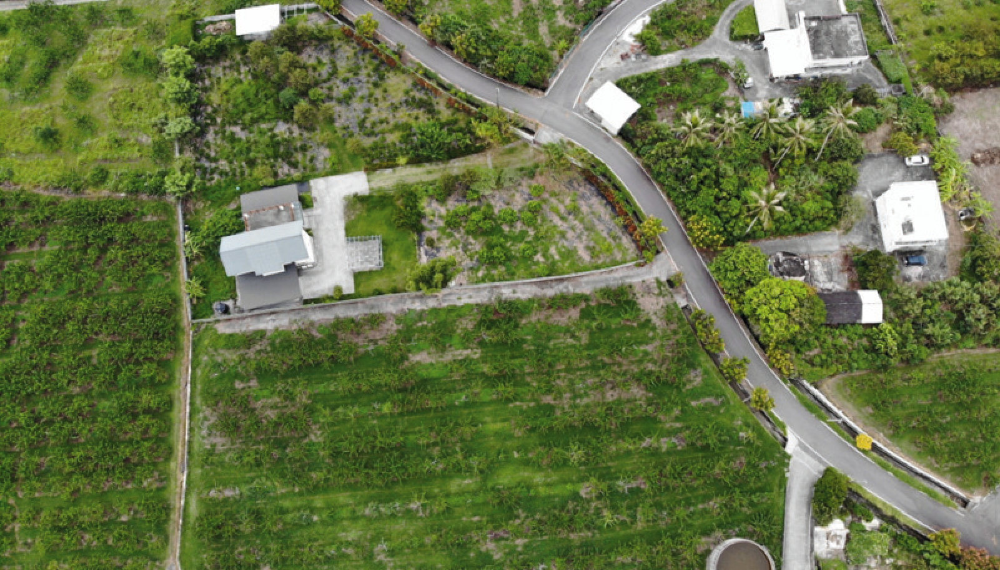
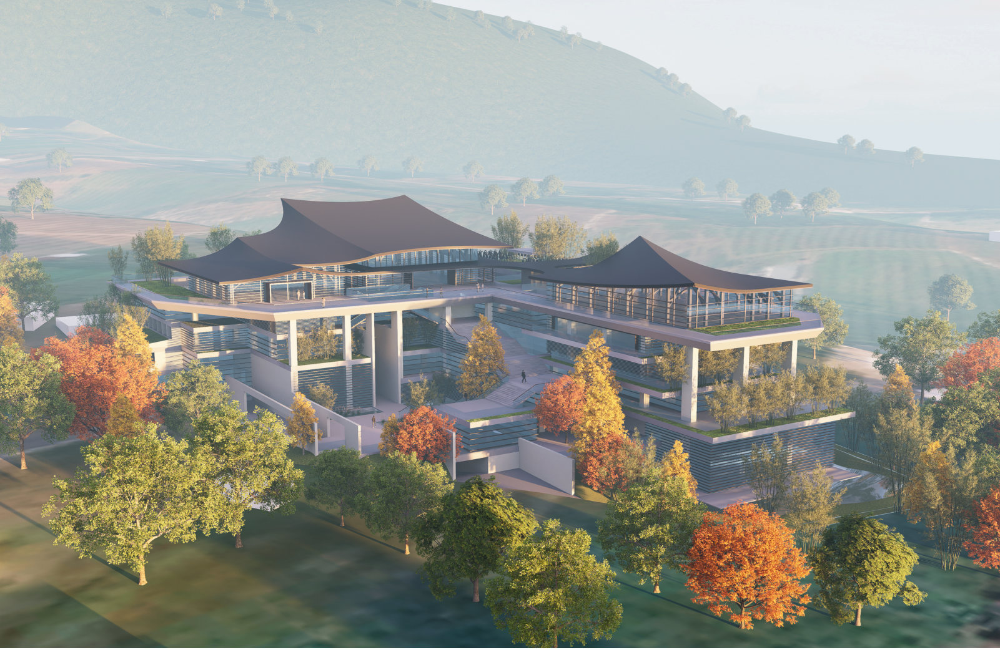
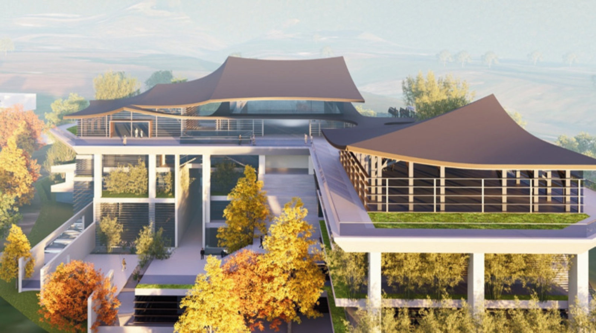
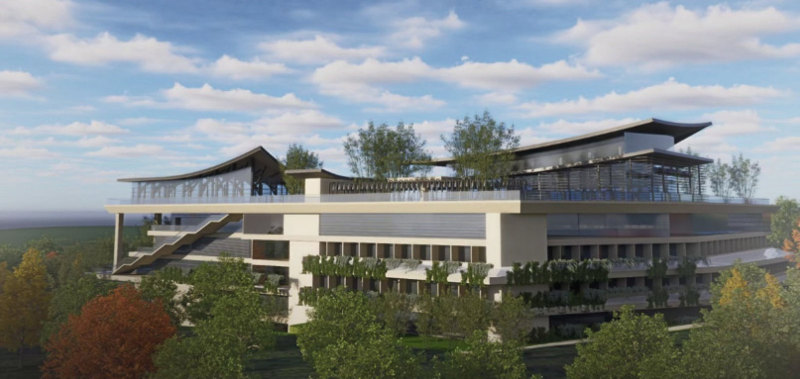
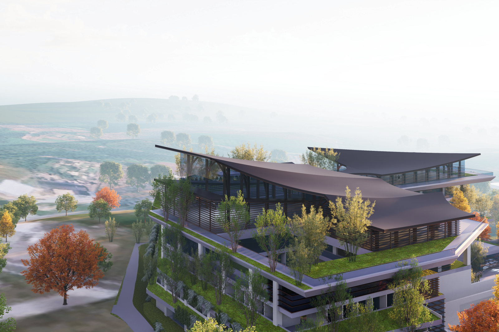
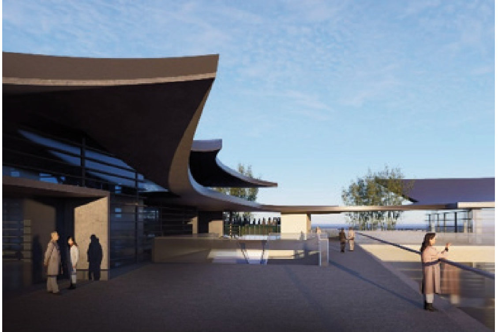
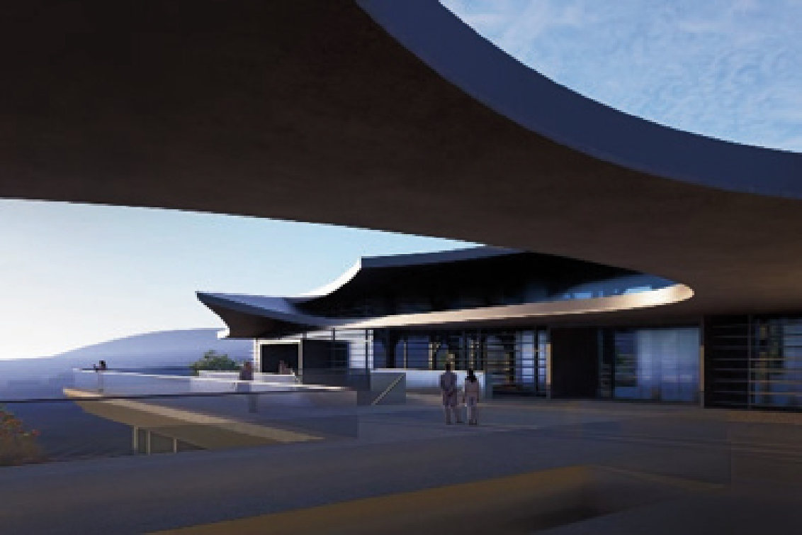

前言與計畫緣起
寶嚴禪寺弘法事業始於 2012 年，以教理、禪定與福德，三環一體的修學方針，倡導全球持誦《華嚴經》，開創寶嚴創生，推廣寶嚴六藝生態圈。遂於台東都蘭覓得一寶地，祈能成就「一個能夠回家的地方」。
寶嚴禪寺不僅是佛法學習場所，更是一個讓 0 至 100 歲的每個人找到心靈歸屬的「家」，提供平等的終身學習空間幫助實現夢想、回饋社會。
建築設計更動沿革紀實
本案曾經委託兩任建築師進行規畫設計，唯因空間使用需求量大，致建築量體語彙與周邊基地環境有些許不協調，故經重新遴選竹間聯合建築師事務所為設計單位，規劃意象：山與都蘭山峰峰相連、像帆，面向太平洋、也像海風吹過的一片雲，讓建築自然找到與土地對話的語言。
選擇竹間聯合建築師事務所之三項考量
簡學義以極簡、精準的建築語彙著稱，對構造節點與材料質感有極高的追求，能有效掌握寶嚴禪寺精準極致簡約的質感。
簡學義擅長處理建築與地景的關係，營造具文化張力且低調、優雅、安定的空間體驗。
簡學義的設計作品深具藝術價值與時間的考驗性，有助於將寶嚴禪寺打造出兼具宗教精神、人文底蘊與歷久彌新的地標性建築。
山海環境與建築設計理念
一座真正的寺院，不只是被看見；而是讓人在其中重新看見山海，也重新看見自己。寶嚴禪寺山海之間的對話
在山海之前，建築得先學會靜默與傾聽
基地位於都蘭山與太平洋之間，眼前是海岸山脈綿延的稜線，是終年被雲霧、季風與光線不斷改寫的天空；轉過身，是一望無垠的太平洋。面對如此完整的天地，在山海之間，建築似乎從一開始就處於某種謙遜的位置。
因為無論我們多麼努力，都蘭山早已比建築更雄偉；太平洋比任何人工空間都更遼闊；而一天之中不斷移動的雲、風與光，也遠比任何造型更多的變化，難以捉摸，更無法複製。而寶嚴禪寺真正值得被記錄的，或許正是這個轉變：它不是一棟從形式出發、再尋找意義的建築；而是一個「願」，先遇見土地，再透過一次次設計、討論、退讓與承擔，逐步找到自己的形體。
真正的基地，不只是一塊土地。它是山、海、風、天空，以及早已存在於此的文化與記憶。
「漂亮」是一時，「經典」才是永恆
寶嚴禪寺如果要存在一百年，甚至更久，它真正能依靠的，會只是「漂亮」嗎？漂亮可以讓人停下第一眼；真正經典有力量的建築，卻應該在十年、五十年甚至更長的時間之後，仍讓人願意回來。人們回來，是因為曾經在這裡曾有過某種難以取代的感受。因此寶嚴禪寺，不應只是思考「如何把建築做得更漂亮」，而是能不能讓它從一棟「被看見的建築」，轉化成一個「被感受到的地方」？
「輕、透、簡、繁、常、弱」：當建築開始學會節制
簡學義於設計討論中，所思考的「輕、透、簡、繁、常、弱」，並不是風格標籤，而是重新思考建築如何存在。「色／空／悟／舞」的並置，讓抽象的佛法概念進入設計討論：不是把經典貼上牆，而是追問它如何成為空間經驗。
不是沒有重量，而是不讓建築以自己的重量壓迫土地。
不是只靠玻璃，而是讓光、風、視線與環境彼此穿越。
不是貧乏，而是拿掉不必要，留下真正重要的。
不是裝飾，而是承認生命、使用與關係本來就有層次。
不是平庸，而是回到日常，讓空間被真正使用。
不是無能，而是有能力存在，卻不急著證明自己。
真正的基地，從來不在地界線裡

當站在基地上，轉身凝視都蘭山，再回眸遠眺太平洋。那一刻，所有事情突然變得很清楚：真正的基地，根本不是地籍圖上那一道紅線。基地往後，是都蘭山；往前，是太平洋；往上，是蔚藍天空。在它們之間，還有風、雲、光、雨、季節、農田、道路、聚落，以及早在人抵達以前，就已經存在於這裡的文化。此時，都蘭山不只是「漂亮的背景」，而是當地重要的文化與精神座標。
先把建築縮小，才能把世界看大
建築設計最容易被圖紙上的紅線限制。一旦視線只停在可建築範圍內，山海便被降格為「景觀」，文化便被降格為「背景」。建築設計應該要把思考尺度拉回更大的山海關係：山脈、基地、海岸、視線與距離被放在同一張紙上。這意味著建築還沒有被當成主角，而只是其中一個需要被校準的位置。好的設計往往從這一步開始：先承認世界已經存在，再決定自己應該如何自然地融入其中。
山不是背景。海也不是景觀資源。它們都是這座寺院到來以前，就已經存在的「主人」。
山、帆與雲：不是造型，而是關係
本案基地後方有巨大的都蘭山，前面是面對遼闊的太平洋，那麼，一座六層樓高的寺院，究竟應該以什麼姿態站在中間？如果建築再向上宣示自己，山、海與建築就會彼此競爭。於是上方最重要的神聖空間屋頂，逐漸被整理，形成連續而起伏的天際線。其呼之欲出的意象：有時像山，彷彿延續都蘭山的稜線；有時像帆，一艘風帆朝向太平洋展開；有時又像一片雲，時而飄泊，時而停留在山與海之間。
讓建築能自我詮釋，也開始懂得自己是何物？身在何處？即心即佛！
將最接近天堂的天空：留給三座最神聖的空間
建築逐層退縮，植栽進入量體。原本可能顯得龐大的六層建築，一層一層往後退，逐漸形成近似人工地景的關係。這個動作很簡單，卻可能比任何宏大的宗教象徵都更有力量。建築退一步，山便向前一步；屋頂退一步，天空便進來一步；形式退一步，人的感受便多出一步。此建築手法創造層層退縮的綠丘平台，留給寶嚴禪寺構築三座最神聖的聖殿。
從「華麗的色」，走向「華嚴的空」
「華嚴」兩個字很容易被誤讀成「華麗」。於是宗教建築很容易用金色、雕刻、繁複圖騰與昂貴材料，來表現所謂「佛國莊嚴」。然而對寶嚴而言，更值得追問的不是「如何把每一樣東西做得更滿」，而是「如何讓每一樣事物，在恰當的位置上與其他事物彼此相應」。
一棵樹，不只是景觀。它與季節、風、陰影、人的停留產生關係；一面牆，也不只是牆。它因為光而有時間，因為人而有尺度，因為山而有方向；一座寺院更不是孤立的「物件」，它與山、海、僧團、護持者、土地、文化與時間彼此成立。當局部與整體彼此相應，「莊嚴」才可能真正發生。它不是表面的華麗，而是一種關係被安放妥當之後，自然而然出現的秩序與寧靜。
材料不是裝飾，而是時間的容器
設計中並無金碧輝煌，也無直接的宗教圖像；真正抓住人心的，是材料、尺度、時間與光。如同銹鐵之所以動人，不在於「昂貴」，而在於它接受時間的洗鍊；清水牆之所以安靜，不在於「素」，而在於它無須多餘的解釋。
未來的材料選擇：神聖空間的精神性未必來自符號的堆疊。材料若能誠實地老去、光若能被看見、人的身體若能在移動中感受到尺度的變化，建築本身就已經開始說話。真正的「永恆」，不是一層不變。而是允許隨時間推移，在建築身上留下生命印記的痕跡。
寺院不是目的地，而是一座橋
未來真正支撐寶嚴禪寺院的，從來不只是鋼筋、混凝土與工程技術，而是很多人的願：見輝師父的發心，僧團與護持者的承擔，設計者與工程團隊一次又一次的對話。一段路無論再遠，都必須從第一步開始；但真正使人走下去的，從來不是路，而是那個「為什麼要走」的願。
希望未來的寶嚴，不只是佛教徒前往的「目的地」，而是一座橋：從忙碌到安靜，從外界到內心，從此岸到彼岸。能引領一個與佛教毫無關係的人，也可以走進來，坐一下，看看山、聽聽海、感受一陣風。也許什麼都沒有發生，卻忽然發現自己的呼吸慢慢緩和下來。
「無為」的最高境界，是讓建築慢慢消退
真正好的宗教建築，有一個非常迷人的矛盾：我們耗費那麼多時間設計它，最後卻希望人們忘記它。人離開寶嚴之後，真正留下來的，也許並不是屋頂究竟用了什麼曲率，牆面採用什麼材料，或者造價多少。他記得的可能只是：那天下午，都蘭山頂剛好有一朵雲；太平洋吹來一陣風；一道光從牆邊慢慢移過去；四周很安靜；然後，他突然聽見了自己很久沒有認真聽過的呼吸，突然聽到深藏內心的呢喃自語。
那一瞬間，建築似乎不存在了。可是也正是在那個時候，建築才真正存在。建築最深的存在，不是被看見，而是讓某些原本看不見的事物，被重新看見：看見光、看見風、看見時間、看見天地，最後，看見自己。
階段設計成果
定案設計外觀成果示意圖。






外牆建材示意圖見下方原件逐頁。
建築面積與空間規劃
空間設計需求自「初步功能需求與空間定性表」逐項盤點，收斂為「最終空間規劃面積表」。建築執照申請係以該規劃面積表為原則。
法規檢討面積
| 項目 | 數值 |
|---|---|
| 基地面積 | 9,700.59 平方公尺 |
| 法定建蔽率 60% | 9,700.59 × 60% ＝ 5,820.35 平方公尺 |
| 實設建築面積 | 5,451.77 平方公尺（建蔽率 56.2%） |
| 法定容積率 180% | 17,461.06 平方公尺 |
| 實設容積樓地板 | 17,457.6 平方公尺（容積率 179.96%） |
| 總樓地板面積 | 24,323.35 平方公尺（7,357.81 坪，含陽台、梯廳、機房與停車場） |
原書〈法規檢討面積〉
建照申請圖說
基礎層、地下一層至六層與屋頂層平面圖，東西南北向立面圖，長向與短向剖面圖，完整圖面見下方原件逐頁。
各層樓地板面積統計表、最終空間規劃面積表皆為原書表格，請於原件逐頁點開大圖檢視。
建築結構系統說明
逐層構造說明涵蓋地下一層至五層（夾層），圖面以鋼梁與 CFT 柱、SRC 梁、SRC 柱、梁上柱四類分色標示。
另含北向與東西向開挖擋土措施示意圖，以及屋頂木構造的兩個比較方案。
| 屋頂木構方案 | 格子樑系統 |
|---|---|
| 方案（一） | 2.25m × 2.25m 格子樑系統 |
| 方案（二） | 0.75m × 2.25m 格子樑系統 |
原書〈屋頂木構方案〉
結語
現世的華嚴世界，是一處僧人安住的清淨地，也是信眾發心相互成就，相互圓滿的地方。台東寶嚴山寶嚴禪寺將會是結合華嚴精神與全人教育的修行場。
見輝法師心目中的寶嚴禪寺，即是溫暖明亮的安心包容之所。是在迷惘的時候，可以靜心照見自己的地方；是在法喜充滿時，可以溫暖別人的地方；是對佛法好奇時，可以探索無邊智慧的地方；是可以簡單往上看靜謐的星空，什麼都暫時不用想的地方；是因為看到這些美好，歡喜發起菩提心的地方；是心之歸家，遊子遠行時將會想念的地。
自 115/1/15 第一次設計簡報至今，迭經多次設計討論調整，現已進入建照審查階段，預計十月初取得建照。期間有賴僧團法師積極的引導和快速的決策，並透過竹間聯合建築師事務所、圓方結構顧問、日昇機電顧問等夢幻組合團隊，方得以順利推展設計階段作業進度。其後更有成本控制及後續發包採購等艱鉅的任務，等著我們一一面對，逐項克服。為搭起這一座連接眾生與華嚴勝境的橋樑，發心發願，共同成就寶嚴禪寺這一份福報來努力。